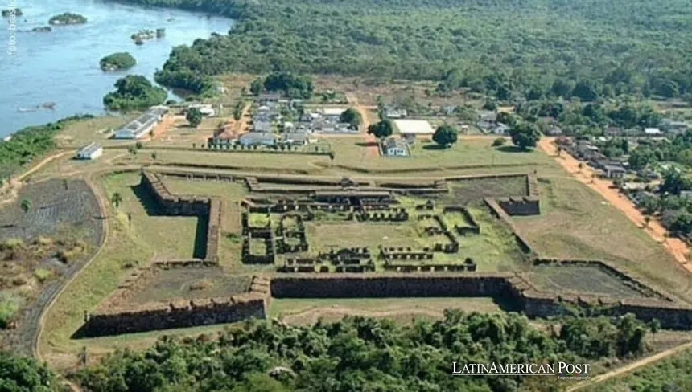

Un grupo de científicos ha localizado, mediante drones y láser, los restos de una civilización desconocida en lo profundo de la Amazonía. Las estructuras, ocultas bajo la vegetación, datan de hace más de 1.500 años.
Las ruinas muestran grandes plataformas circulares, caminos elevados y canales de irrigación, lo que indica una sociedad avanzada con miles de habitantes.
Los expertos afirman que este hallazgo cambia por completo la idea de que la selva solo fue habitada por pequeñas tribus nómadas. “Era una metrópolis verde”, dijo la arqueóloga líder.
Las comunidades indígenas de la zona piden ser parte de la investigación y protección del lugar, considerado sagrado por sus antepasados.
El equipo planea nuevas expediciones para excavar y preservar el sitio antes de que la deforestación lo destruya para siempre.

Entre los primeros hallazgos destacan cerámicas decoradas y herramientas de piedra pulida, que revelan un comercio extenso con otras regiones andinas. La tecnología LiDAR permitió mapear más de 6.000 montículos artificiales en un área de 300 kilómetros cuadrados.
Este descubrimiento desafía la teoría de una Amazonia "virgen" y resalta cómo las civilizaciones precolombinas modificaron el paisaje con agricultura intensiva y sistemas hidráulicos sostenibles, influyendo en la biodiversidad actual de la selva.
Organizaciones como la UNESCO ya han expresado interés en declarar el sitio Patrimonio Mundial, promoviendo una alianza entre científicos, gobiernos locales e indígenas para evitar la explotación ilegal y fomentar el ecoturismo responsable en la zona.